Gradients of models#
[1]:
import numpy as np
from astropy.io import fits
import matplotlib.pyplot as plt
import sys
[200]:
phi = np.arange(-np.pi, np.pi, 0.05)
y = 3.1293*np.sin(phi) + -4.294*np.cos(phi) + np.random.normal(0, 0.3, size=len(phi))
ye = np.ones(len(phi)) * 0.3
plt.errorbar(phi, y, ye, c='k', ls='')
[200]:
<ErrorbarContainer object of 3 artists>
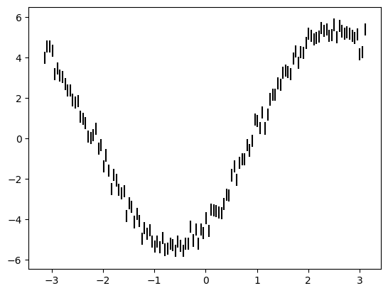
[201]:
from lamatrix import Sinusoid
[202]:
model = Sinusoid('phi')
model.fit(phi=phi, data=y, errors=ye)
[203]:
model.posteriors.mean
[203]:
array([ 3.17886924, -4.34213633])
[204]:
plt.errorbar(phi, y, ye, c='k', ls='')
plt.plot(phi, model.evaluate(phi=phi), c='r')
[204]:
[<matplotlib.lines.Line2D at 0x326146970>]
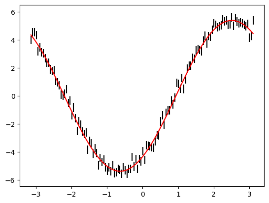
[205]:
dmodel = model.to_gradient()
[206]:
dmodel
[206]:
dSinusoid(phi)[n, 1]
[207]:
plt.errorbar(phi, y, ye, c='k', ls='')
plt.plot(phi, model.evaluate(phi=phi), c='r')
plt.plot(phi, dmodel.design_matrix(phi=phi)[:, 0], c='b', ls='--')
[207]:
[<matplotlib.lines.Line2D at 0x3263c1340>]
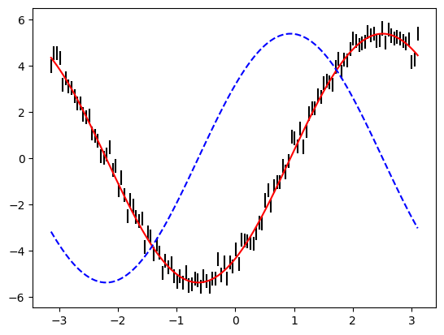
[213]:
phi = np.arange(-np.pi, np.pi, 0.05)[:, None] * np.ones(200)
y = 3.1293*np.sin(phi) + -4.294*np.cos(phi) + np.random.normal(0, 0.3, size=phi.shape)
ye = np.ones(phi.shape) * 0.3
plt.imshow(y, vmin=-6, vmax=6)
[213]:
<matplotlib.image.AxesImage at 0x16aba1940>
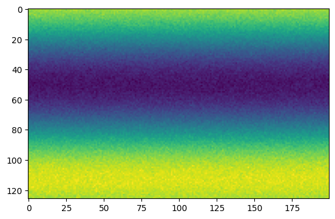
[214]:
model = Sinusoid('phi')
model.fit(phi=phi, data=y, errors=ye)
[215]:
plt.imshow(model.evaluate(phi=phi), vmin=-6, vmax=6)
[215]:
<matplotlib.image.AxesImage at 0x3263c12e0>
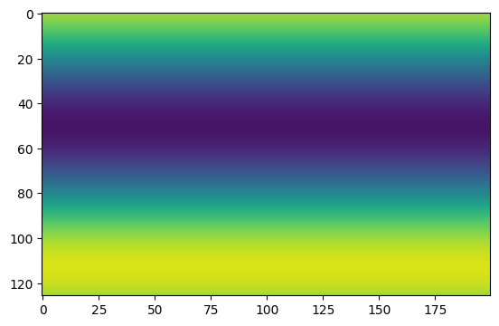
[216]:
plt.imshow(model.to_gradient().design_matrix(phi=phi)[:, :, 0], vmin=-6, vmax=6)
[216]:
<matplotlib.image.AxesImage at 0x325d713a0>
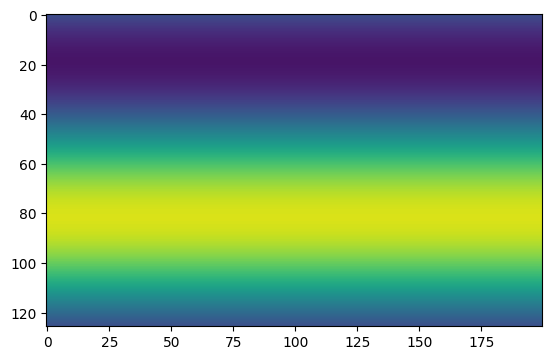
[309]:
x = np.arange(-5, 5, 0.01)
y = np.arange(-1, 1, 0.01)
X, Y = np.meshgrid(x, y)
z = np.random.normal(size=len(x))
z = np.convolve(z, np.ones(300), mode='same')
Z = np.interp(x - (0.03*y)[:, None], x, z)
[310]:
plt.imshow(Z)
[310]:
<matplotlib.image.AxesImage at 0x3c0f0afd0>
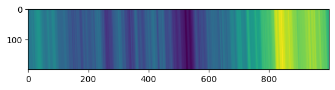
[311]:
from lamatrix import Spline
[312]:
knot_spacing = 0.05
order = 3
knots = np.arange(-5 - knot_spacing * (order - 1), 5 + (knot_spacing * (order - 1)) + knot_spacing, knot_spacing)
[355]:
spline = Spline('x', knots=knots, order=order)
[356]:
spline.fit(x=X, data=Z)
[357]:
plt.imshow(spline.evaluate(x=X))
[357]:
<matplotlib.image.AxesImage at 0x3be153040>
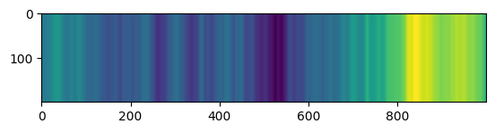
[358]:
dspline = spline.to_gradient()
[359]:
plt.imshow(dspline.design_matrix(x=X).dot([1]))
[359]:
<matplotlib.image.AxesImage at 0x3be1aedf0>
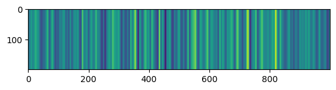
[360]:
from lamatrix import Constant, Polynomial
[362]:
model = spline + (Polynomial('y', order=1) * dspline)
[363]:
model
[363]:
JointModel
Spline(x)[n, 202]
CrosstermModel(y, x)[n, 1]
[364]:
model.fit(x=X, y=Y, data=Z)
[366]:
plt.imshow(model.evaluate(x=X, y=Y))
[366]:
<matplotlib.image.AxesImage at 0x3be3c16a0>
[367]:
plt.imshow(Z - model.evaluate(x=X, y=Y), vmin=-1, vmax=1)
[367]:
<matplotlib.image.AxesImage at 0x3be3fa250>
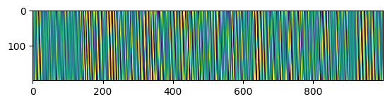
[368]:
model[1].posteriors.mean
[368]:
array([-0.03102141])
[369]:
plt.plot(X.T, Z.T, lw=0.1, c='k');
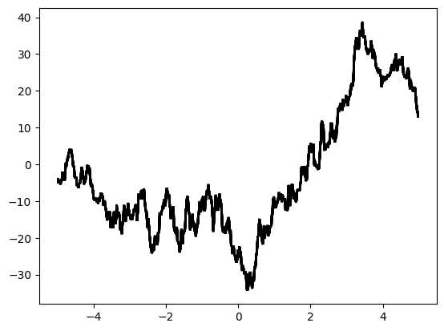
[370]:
shifted_X = (Y * model[1].posteriors.mean[0])
plt.plot(X.T + shifted_X.T, Z.T, lw=0.1, c='k');
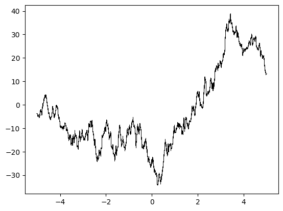
[372]:
spline.fit(x=X + shifted_X, data=Z)
[373]:
plt.plot(x, spline.evaluate(x=x))
[373]:
[<matplotlib.lines.Line2D at 0x3bb9e3310>]
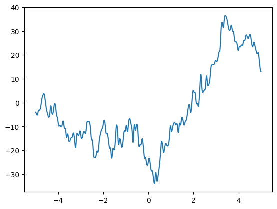
[396]:
shifted_X = X*0
for count in range(3):
spline = Spline('x', order=order, knots=knots)
poly = Polynomial('y', order=1)
model = spline
model.fit(x=X + shifted_X, data=Z)
model = spline + spline.to_gradient() * poly
model.fit(x=X, y=Y, data=Z)
shifted_X = (Y * model[1].posteriors.mean[0])
[390]:
[390]:
array([-0.03102141])
[ ]: